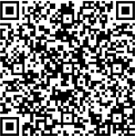
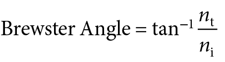
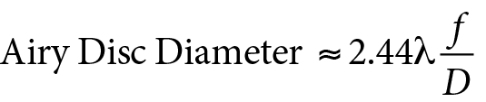

Chapter 2
Physical Optics
 This chapter includes a related video. Go to www.aao.org/bcscvideo_section03 or scan the QR code in the text to access this content.
This chapter includes a related video. Go to www.aao.org/bcscvideo_section03 or scan the QR code in the text to access this content.
Highlights
- Quantum electrodynamics (QED) explains all the properties of light we know, resolving the wave–particle confusion.
- For physical phenomena at the macroscopic level, such as polarization, interference, coherence, and diffraction, it suffices to consider the wavelike behavior of light.
- We differentiate between radiometric and photometric measures of light; photometry can be considered a subtype of radiometry that adjusts for the variable spectral response of the human eye.
- To understand lasers and their therapeutic interaction with tissue, it becomes crucial to consider the quantum behavior of light.
- Therapeutic and nontherapeutic damage to the eye caused by light is primarily dependent on the wavelength as well as the irradiance and duration of light exposure.
Glossary
Coherence A measure of the uniformity and homogeneity of a beam of light. Coherence governs the ability of light to produce interference phenomena.
Diffraction The spreading of light beyond the edges of a small aperture or “bending around the corners” of an obstruction into a region where—using strictly geometric optics reasoning—we would not expect to see it. This phenomenon sets a limit on the resolution that can be achieved in any optical instrument. With a circular aperture such as the pupil, for example, the image of a point source of light formed on the retina—the point spread function (PSF)—in the absence of aberrations takes the form of alternating bright and dark rings surrounding a bright central spot, the Airy disc, rather than a point.
Geometric scattering Scattering of light by particles that occurs if the particle size is very large compared to the wavelength of incident light. The interaction of light with the particle is usually sufficiently described by the laws of geometric optics (refraction and reflection). The formation of a rainbow, for example, is sufficiently described by refraction and reflection by raindrops.
Interference Interference reveals the correlation between light waves and occurs when 2 light waves are brought together (superposition of waves), reinforcing each other and resulting in a wave of greater amplitude (ie, constructive or additive interference), or subtracting from each other and resulting in a wave of lower amplitude (ie, destructive or subtractive interference).
Laser Acronym for Light Amplification by Stimulated Emission of Radiation. A device which produces highly monochromatic, highly coherent beams of light.
Mie scattering Scattering of light produced by particles whose size is the same order of magnitude as the wavelength of incident light. Mie scattering caused by water droplets contributes to the white appearance of clouds. Similarly, Mie scattering caused by a cataract accounts for the whitish appearance of the lens under slit-lamp examination.
Photometry A measurement of the human visual system’s psychophysical response to light. Basically, photometry can be considered a subtype of radiometry that adjusts for the varying sensitivity of the eye to different wavelengths in the visible spectrum.
Polarization Light is said to be polarized when the orientation of the electric field, as it oscillates perpendicularly to the direction of propagation, is not random. The polarization state can be pictorially represented by the path that the tip of the electric-field vector traces with time as viewed along the propagation axis while one looks toward the source, and can be linear, circular, or elliptical.
Quantum electrodynamics (QED) The quantum theory of the interaction of light and matter that resolves the wave–particle confusion. The theory describes most of the phenomena of the physical world—including all observed phenomena of light—except for gravitational and nuclear phenomena.
Radiometry Refers to the direct measurement of light in any portion of the electromagnetic spectrum. In contrast to photometric measurements, radiometric measurements weight equally the energy transmitted at every wavelength of the electromagnetic spectrum.
Rayleigh scattering Wavelength-dependent scattering that occurs when light interacts with particles much smaller than the wavelength of the light. The blue appearance of the sky during daytime and its reddish appearance during sunrise or sunset is due to Rayleigh scattering by atmospheric gas molecules. The bluish appearance of the cornea and lens (particularly noticeable in young eyes) under slit-lamp examination is also due to Rayleigh scattering by stromal collagen and lenticular fiber cells.
Wave-particle confusion The ambiguity of the behavior of light as observed at different scales: at large scales, light exhibits wave properties, such as polarization and interference. At smaller scales, light behaves as a stream of particles, transferring momentum and transferring energy in discrete quanta.
Introduction
The discussion of geometric optics in Chapter 1 disregards the wavelength and photon character of light. It uses the artificial construct of light rays to show how light behaves on a large scale, compared with the dimensions of interest.
Physical optics goes beyond ray tracings and vergence calculations and deals with the properties of light on smaller scales, providing explanations for many of the phenomena of the physical world, such as polarization, interference, coherence, and diffraction, for which the ray approximation of geometric optics is insufficient.
What Is Light?
Visible Light
In ophthalmic optics, the term light generally refers to visible light, which is just a very narrow portion of a long scale, analogous to a musical scale, in which there are “notes” both higher and lower than we can perceive (Fig 2-1). The visual perception of these notes—specified by frequency (ν) and wavelength (λ) along the “scale” of light (the electromagnetic spectrum) and related to each other via the “speed of light” (c = ν λ ≈ 3 × 108 m/s in a vacuum)—is what we call (spectral) color.
Although the visible spectrum is normally considered to run from 400–700 nm, the boundaries are not precise. Under certain conditions, such as with sufficiently intense light, the eye’s sensitivity extends into the infrared and ultraviolet (UV) regions. As another example, in aphakia, without the UV absorption of the natural lens, the retina can detect wavelengths well below 400 nm.
Wave or Particle?
The earliest comprehensive theories on the nature of light were advanced around the turn of the 17th century. In 1690, Christiaan Huygens put forward a wave theory of light, demonstrating how light waves might superimpose (interfere) to form a wavefront, similar to water waves (Fig 2-2), and travel in a straight line (in accordance with the ray approximation of geometric optics). As such, Huygens’s wave theory covered little of what we would call physical optics today and was soon overshadowed by Isaac Newton’s particle viewpoint. Newton suggested that light was made of particles—he called them “corpuscles.” The particle theory of light took precedence and was accepted essentially unchallenged for over a century.
In the early 19th century, Thomas Young’s double-slit experiment appeared to prove the wavelike behavior of light, via the observation of bright and dark bands (fringes) upon illumination of a barrier with 2 narrow openings, very similar to the interference pattern that results from the superposition of water waves. Later that century, James Clerk Maxwell formulated light entirely as a wave; that is, as the propagation of electromagnetic waves (Fig 2-3) according to his Maxwell equations. Thus, for many years after Newton, as interference, diffraction, and other phenomena were readily explained by waves, the wave model became the dominant theory of the nature of light.
However, it is now clear that light also exhibits properties of particles, as seen in experiments with instruments that are sensitive enough to detect very weak light. An example of such an instrument is a photomultiplier, which produces “clicks” when light is shined on it. According to the wave theory, these clicks should become less loud as the intensity of the impinging light is decreased. In reality, these clicks remain equally loud but decrease in frequency. Thus, light can be thought of as something like raindrops, with each little “drop” being called a photon.
In the early 20th century, Albert Einstein postulated light as the sum of individual packets (quanta) of energy, and thus was born the word photon and the quantum theory of light (Fig 2-4). This influenced the formation of the concept of a wave–particle duality of light, which was not a very satisfactory theory, but rather represented a state of confusion as to exactly which model to use in each circumstance. Maxwell’s theory of electromagnetism (which fails to explain the observations with very dim light falling on photomultipliers) had to be modified to conform with the concepts of quantum mechanics (essentially a description of the motion of electrons in matter).
A new theory—quantum electrodynamics (QED)—the quantum theory of the interaction of light and matter, developed by a number of physicists in 1929 and clarified by Richard Feynman and 2 other physicists, Julian Schwinger and Sin-Itiro Tomonaga, in 1948, unites Maxwell’s equations of electricity and magnetism with quantum mechanics. QED, which states that light is made of particles, thereby resolves the wave–particle confusion—not in the ordinary sense of providing equations that can be used to predict exactly what will happen in any given experiment, but rather by providing tools with which one is able to calculate the probability of an outcome event.
Thus, contrary to what is taught in many ophthalmology and ophthalmic optics textbooks, there is one theory that explains all the properties of light we know: QED. Note that for most purposes, it suffices to consider the wavelike behavior of light (see Fig 2-3) for phenomena at the macroscopic level and the simple quantum-view of the light (see Fig 2-4) at the microscopic level, as will be illustrated in this chapter.
Feynman RP. QED: The Strange Theory of Light and Matter. Princeton University Press; 2014.
Quantum Electrodynamics: Unifying Theory of Light
Quantum electrodynamics describes most of the phenomena of the physical world, except for gravitational and nuclear phenomena. All these phenomena can be deduced from 3 basic actions, each of which occurs with a certain probability that can be calculated using the tools of the theory: (1) a photon goes from point to point, (2) an electron goes from point to point, and (3) an electron emits (or absorbs) a photon. Qualitatively, the theory boils down to photons, which make up the light, going from one electron to another, and electrons, which make up matter, picking up and giving off photons while moving about.
Refraction and Reflection
Both refraction (transmission) and reflection are the result of the interaction of light and matter, that is, of photons with electrons in the atoms and molecules inside the refractive and/or reflective media.
Chapter 1 explains that light changes speed and direction when moving from one medium to another. However, the individual photons do not move more slowly inside the material. Slowing of the light is caused by the electrons throughout the material scattering the photons, and the degree to which there is scattering is called the refractive index for that particular medium. Similarly, light is not reflected off a surface. In reality, the photons are scattered by the electrons in the material, the net result of which is the same as if the photons hit and were reflected at the surface.
This is what essentially happens during refraction and reflection: a photon arrives from the outside, hits an electron, and is picked up by the electron (absorption); some time later, the electron emits a new photon. This dance of photons and electrons is called scattering of light. Thus, in refracted and reflected light, the photon that emerges from the process is not the same photon as the one that went in. Hence, the behavior of light in classical optics reflects the net result rather than the actual path of the photon, providing a convenient “straight-line” approximation to describe the phenomena we are familiar with.
Scattering
The scattering of light by an electron in an atom is the phenomenon that accounts for reflection and transmission (refraction) in a medium. Light scattering, among other factors, is also responsible for the visible appearance or perception of color and may be divided into 3 regimes—Rayleigh scattering, Mie scattering, and geometric scattering—according to the dimensions of the scattering medium compared with the wavelength of the incident light. Note that the Tyndall effect, a term commonly used in ophthalmology and chemistry for scattering of light by colloidal suspensions, does not describe a separate scattering regime, but rather the effect of the light beam becoming visible. For example, normally you cannot see a beam of light in water or the aqueous humor. Shining a flashlight beam in a glass of water after adding a few drops of milk is an excellent demonstration of the Tyndall effect. The milk proteins will stay suspended in the water (a colloid suspension), making the beam visible. Similarly, if we can see the beam of light in the aqueous humor during slit-lamp examination, this is an indication of inflammation; in other words, an indication resulting from the presence of suspended protein in the aqueous.
Rayleigh scattering
Rayleigh scattering occurs when light interacts with particles much smaller than the wavelength of the light. The degree of this form of scattering varies strongly with wavelength, more precisely, inversely to its fourth power. Therefore, the probability that light will scatter is much higher for shorter wavelengths (higher frequencies), such as blue light, than for longer wavelengths (lower frequencies), such as red light.
The effect of Rayleigh scattering of sunlight on gas molecules that make up the Earth’s atmosphere is what produces the blue appearance of the sky during daytime and its reddish appearance during sunrise or sunset. This is because during daytime, when the sun is overhead, the highly scattered wavelengths from the blue end of the spectrum that are emitted by the sun reach your eye from all directions, whereas the weakly scattered redder wavelengths miss your line of sight when you look at the sky away from the direction of the sun. At sunrise and sunset, with the sun at the horizon, it is the weakly scattered wavelengths from the red end of the spectrum that can still be seen, passing through the atmosphere toward your eyes almost undeviated, while the blue light that is scattered misses your line of sight. This can be appreciated and re-created at home, with the help of a flashlight and a transparent bowl containing some water and a few drops of milk. With direct viewing of the flashlight beam, and with the light traveling through the diameter of the bowl, a red or orange glow can be perceived. If, on the other hand, the light is shined from above, a blue glow can be observed.
Stromal collagen and lenticular fiber cells cause Rayleigh scattering of incident light, which is responsible for the bluish appearance of the cornea and lens (particularly noticeable in young eyes) under slit-lamp examination.
Mie scattering
Mie scattering is produced by particles whose size is the same order of magnitude as the wavelength of incident light. Unlike Rayleigh scattering, this form of scattering, on average, does not vary strongly with wavelength and tends to be stronger in the forward direction (ie, a direction that is within 90° of the direction of propagation) than in any other direction.
Mie scattering contributes to the white appearance of clouds. This is because the water droplets that make up the cloud are of comparable size to the visible wavelengths, so that the probability of being scattered is about identical for the different wavelengths (or frequencies) in the white sunlight, and the clouds therefore appear to be white.
In the eye, age-related increase in scattering is mostly associated with an increase in Mie scattering by cataract formation, which adds a strong forward, but less wavelength-dependent, component to the Rayleigh scattering (the predominant scattering component in healthy young eyes). Mie scattering caused by a cataract accounts for the whitish appearance of the lens under slit-lamp examination. The increase in forward scattering is what results in decreased contrast of the patient’s retinal image, and hence increased glare sensitivity. Similarly, Mie scattering on microvacuoles is responsible for degraded visual quality associated with the formation of glistenings in intraocular lenses.
Geometric scattering
If the particle size is much larger than the wavelength of incident light, the interaction of light with the particle is usually sufficiently described by the laws of geometric optics (refraction and reflection). For example, refraction and reflection are sufficient to explain the formation of a rainbow. This is because raindrops are larger than water droplets in clouds and can be considered as merely refracting and reflecting the white sunlight from their surfaces. This nicely illustrates how at the macroscopic level the quantum behavior of light can be conveniently disregarded.
Phenomena of Light
Although QED can account for all observed phenomena of light, several macroscopic phenomena of light, such as polarization, coherence, and interference, can completely, and more easily, be explained by Maxwell’s classical theory of electromagnetic waves. In this context, light may therefore be described as a transverse electromagnetic wave whose oscillating electric and magnetic fields are perpendicular both to each other as well as to the direction that the light travels (see Fig 2-3).
Polarization
Fundamentals
As light travels within homogeneous and isotropic media, the magnetic field is always perpendicular and proportional to the electric field. It is thus convenient to focus on only one of them when considering polarization, typically the electric field. The orientation of the electric field, as it oscillates perpendicularly to the direction of propagation, defines the state of polarization. Note that the electric-field vector, which is shown oriented in a single plane in Figure 2-3, typically changes rapidly and randomly, resulting in randomly polarized light that is said to be unpolarized. When the movement of the electric-field vector is not random, the light is said to be polarized. Pictorially, the polarization state can be represented by the path that the tip of the electric-field vector traces with time as viewed along the propagation axis, looking toward the source (Lissajous figures). Figure 2-3 depicts linearly polarized light, with the electric-field vector being constrained to a single plane; when viewed head-on, it traces a single line. In circularly polarized light, the electric-field vector rotates, tracing a corkscrew pattern as the light propagates (Video 2-1). Viewed head-on, the pattern mapped out by the tip of the electric-field vector is a circle. In elliptically polarized light, which represents a more general case of circular polarization, the electric-field vector rotates and at the same time changes its amplitude as the light propagates, tracing an ellipse instead of a circle when viewed head-on.

Video 2-1 Circularly polarized electromagnetic wave.
Animation developed by Kristina Irsch, PhD;
based on graphics from Dave3457/ Wikimedia Commons (public domain).
Polarized light can be produced in a number of ways. One way to produce completely or partially polarized light is by reflection. Partial polarization, as the name implies, is a mixture of unpolarized and polarized light (linear, circular, or elliptical). Fresnel showed that the polarized component of reflected light tends to be linear, parallel to the interface. Reflected light is completely polarized if the angle of incidence equals the Brewster angle:

where nt and ni are the refractive indices of the transmitted and incident media, respectively. At the Brewster angle, all the reflected light is linearly polarized, but not all the linearly incident light is reflected. Consequently, the transmitted light is a mixture of linearly and randomly polarized (commonly referred to as “unpolarized”) light—that is, it is partially polarized.
Applications and clinical relevance
Ophthalmic applications of polarization are numerous, some of which are discussed briefly here. Polarizing sunglasses are sometimes useful for reducing glare from reflected sunlight. Reflected light is somewhat polarized parallel to the reflecting surface, and in most environments, reflecting objects tend to be horizontal. In boating, for example, sunlight reflected from the water surface is partially polarized, usually horizontally, as is light reflected from a road surface or from the hood of a car. Even the sky acts as a partial polarizer by means of the scattering properties of air molecules. Accordingly, sunglasses incorporate vertically oriented linear polarizers (polarizing filters) to block the horizontally polarized component of reflected light.
Several stereopsis tests incorporate the use of linear polarizers. The well-known Stereo Fly test, for example, displays 2 slightly displaced images that linearly polarize light in perpendicular meridians. The person being assessed wears glasses containing linear polarizers, also at right angles to each other; each eye sees just 1 of the images. Thus, a single 3-dimensional (3D) image is perceived by someone with normal 3D or stereoscopic vision.
Interference and Coherence
Fundamentals
Figure 2-5 illustrates the basic concept of interference by means of Young’s double-slit experiment, discussed earlier. Upon illumination of a single slit or pinhole aperture, spherical wavefronts emanate; this is similar to what can be observed when water waves encounter a barrier with a narrow opening (see Fig 2-5A). These wavefronts then strike a barrier with 2 narrow openings or a double slit, from which new wavefronts emerge; these are then brought together (superimposed) on a screen. If light of a single color (ie, monochromatic light) is used, a series of alternating bright and dark bands (fringes) is created. This interference pattern is very similar to what can be observed from the superposition of water waves (see Fig 2-5B) and reveals the interaction between the waves.
As shown in Figure 2-5C, the light waves may either reinforce each other, resulting in a wave of greater amplitude (ie, constructive or additive interference), or subtract from each other, resulting in a wave of lower amplitude (ie, destructive or subtractive interference). Note that the curved lines (wavefronts) represent the crests of the waves at a particular instant. Where the crests coincide (ie, the waves overlap “in phase”; eg, at i), a resultant wave of twice the amplitude is produced and brightness (intensity) on the screen is maximized. Note that intensity is a measure proportional to the square of the amplitude; with the amplitude of the wave doubled, the detected intensity is hence quadrupled. Where the crest of one wave coincides with the trough of the other wave (ie, the waves overlap “out of phase”; eg, at ii), the waves cancel each other and intensity is minimized. Where the waves partially overlap (ie, neither completely in nor out of phase; eg, at iii), a resultant wave between zero and twice the amplitude is produced and intensity on the screen is intermediate.
Another way to generate such interference patterns or interferograms is via a Michelson interferometer. In Michelson interferometry, as depicted in its basic configuration in Figure 2-6, light is first separated into 2 parts by a partially reflecting mirror or beam splitter. Each half-wave then propagates to a different mirror (50% of the light is reflected toward mirror 1 and the other 50% is transmitted to mirror 2) and, upon reflection from either mirror, is recombined with the other half-wave at the same beam splitter. Rather than the resultant interference–fringe pattern with areas of increased and decreased brightness being displayed by a screen or a camera, generally a detector is used to register interference effects by measuring the intensity level at the center of the interferogram.
The reader should be aware, however, that certain conditions have to be met in order to observe such interference phenomena. Not all sources of light generate visible interference–fringe patterns or detectable interference signals. A key ingredient missing from our basic discussion of interference thus far is coherence, which describes the ability of light to produce interference phenomena. If it generates a fringe pattern with areas of complete constructive and destructive interference, the light is considered to be fully coherent; if no fringe pattern is observable, it is considered incoherent. Light is considered partially coherent if a fringe pattern is still detectable, with less than “perfect” areas of constructive and destructive interference.
The visibility of interference effects thus provides a measure of the amount of coherence, which mathematically relates to the correlation of the light wave at different points in time or space. Hence, one generally differentiates between temporal coherence and spatial coherence. The latter refers to the similarity of wavefronts at different points in space, while the former describes the regularity of their spacing in time, or, in other words, how monochromatic the light is. More precisely, temporal coherence is the correlation of the light wave (at a single location) at different moments in time; spatial coherence is defined as the light wave correlation at the same moment in time, at different locations in space.
The basic concepts of coherence are illustrated in Figure 2-7. A white light source produces incoherent light, emitting wavefronts of diverse colors (wavelengths) and shapes. However, if incoherent light is passed through a pinhole aperture (spatial filter), spatial coherence of the light is improved; that is, the resulting wavefronts are more regularly arranged. If spatially coherent light is passed through a narrowband filter, which selects a limited band of wavelengths (we will discuss later how these filters work), temporal coherence of the light is also improved—that is, the resulting wavefronts have the same wavelength—thereby making the light more nearly monochromatic. Laser light is highly spatially and temporally coherent. However, as shown here, coherent light can be produced even without a laser, but at the expense of discarding a large amount of the light.
Similarly, the first pinhole aperture depicted in Young’s double-slit experiment (see Fig 2-5) serves to create spatially coherent wavefronts. In fact, the double-slit experiment is a demonstration of spatial coherence and enables the measurement of the ability of light to interfere with a spatially shifted version of itself. Interference fringes are detectable on the final screen only when the double-slit area (defined by the separation between the 2 narrow openings) falls within the (spatial) coherence area of the incident light.
Conversely, Michelson interferometry provides a measure of temporal coherence of light, namely the light’s ability to interfere with a time-delayed version of itself. By adjusting the position of one of the interferometer’s mirrors, referred to as the reference mirror (eg, mirror 1 in Fig 2-6), the path of the light in the so-called reference arm is altered by a known distance, generating a path–length difference, Δz, with the other arm. The other arm is called the sample arm, as it may contain a sample with a reflecting surface in place of the mirror, as illustrated in Figure 2-8. Interference effects are detectable only for path–length differences, that is, the differences in optical distances traveled by the light in the sample and reference arm (Δz = zR − zS ), matching to within the light’s coherence length, lC. The interference signal disappears for path–length differences above the coherence length of the light source, with only a diffuse spot of light remaining on the detector. In other words, coherence length is the maximum path–length difference for good visibility of interference fringes. Likewise, the time it takes light to travel a distance equal to the coherence length is called coherence time. These concepts of coherence length and coherence time are essential to the understanding of the basic principle of optical coherence tomography (OCT; see Chapter 9).
Both coherence time and coherence length are inversely proportional to the spectral bandwidth of the light source (ie, the frequency or wavelength range over which sources emit light). This is illustrated in Figure 2-9 and means that a source with a narrow spectral bandwidth (light of nearly a single wavelength or that is wholly monochromatic; eg, laser light) has a high temporal coherence (ie, long coherence time), whereas a source with a broad bandwidth (light of multiple wavelengths; eg, white light) has a low temporal coherence (ie, short coherence time).
Hence, when a narrowband (or highly temporally coherent) source is used to perform interferometry (eg, laser interferometry), interference fringes will occur over a long range of path–length differences (Fig 2-10). In low-coherence interferometry, that is, when a broadband light source is used, on the other hand, interference occurs only when the time traveled by the light in the reference and sample arms is nearly equal within the short coherence length of the source. Low-coherence interferometry therefore enables greater sensitivity in separating out reflections, especially from a sample with multiple, closely spaced reflecting surfaces (Fig 2-11), and forms the basis of OCT (see Chapter 9).
Applications and clinical relevance
One familiar application of interference in ophthalmic optics is the use of antireflection coatings on spectacle lenses (Fig 2-12). To decrease unwanted reflections from the surfaces of spectacle lenses, a thin film of a transparent material with a refractive index that is different from that of the lens is deposited on the lens surface, so that some light will be reflected from the back surface and an equal amount will be reflected at the front surface of the thin film. These reflected waves—if the thickness of this deposited film is chosen such that it is one-quarter of a specified wavelength of light—will be one-half wavelength out of phase, resulting in complete destructive interference and therefore eliminating the reflections.
The use of narrowband interference filters, such as in fluorescein and indocyanine green angiography, as well as autofluorescence imaging (discussed in Chapter 9), is another application of interference in ophthalmology. To produce very sharp boundaries and separate excitation from fluorescent light, a thin film of a transparent material is deposited on a glass substrate, similar to the previous example but in this case with a thickness that is a multiple of the desired wavelength and surfaces that are partially reflecting. Multiple reflections of light with the desired wavelength, from the front and back surfaces of this deposited film, will exit in phase and reinforce each other, whereas light of other wavelengths will exit out of phase and the wavelengths will cancel each other (Fig 2-13). Modern narrowband filters exist that consist of several thin layers of transparent materials that allow only light of wavelengths within a few nanometers to be transmitted and block everything else.
Diffraction
Fundamentals
If we try to pass light through a very small hole, we will realize that it actually does not go in a straight line, but rather spreads out (see Fig 2-5A). This apparent “spreading out beyond the edges” of an aperture or “bending around the corners” of an obstruction, into a region where—using strictly geometric optics—we would not expect to see it, is referred to as diffraction. Diffraction may be thought of as light, when encountering an obstacle, scattering off in different directions at the edges. What really happens, of course, is that light interacts with the electrons in the material, most noticeably with the electrons at the edges.
While a more detailed description of diffraction is beyond the scope of this text, we can appreciate that once light scatters off in different directions, it usually interferes with other parts of the diffracted light. Hence, in classical wave theory, the phenomenon of diffraction of light, as it passes beyond an obstacle of comparable size to its wavelength, is generally described as due to the interference of the light emerging from the aperture or obstacle.
For apertures, the consequence of these interference effects created by diffraction is that there is a limit to the resolution that can be achieved in any optical instrument; this immediately brings us to applications and clinical relevance in ophthalmology.
Applications and clinical relevance
All apertures produce diffraction to some extent, even an opening as large as the pupil of an eye. Thus, we are constantly aware of its effects in ophthalmology.
With a circular aperture, such as the pupil, in the absence of aberrations, the image of a point source of light formed on the retina—the point spread function (PSF)—takes the form of alternating bright and dark rings surrounding a bright central spot, the Airy disc (Fig 2-14), rather than a point. This pattern is the consequence of diffraction and its associated interference effects. The latter are apparent by the concentric bright and dark rings that are analogous to the fringes observed in Young’s double-slit experiment (see Fig 2-5). Most of the energy is concentrated in the central disk, so the outer rings are usually ignored. The diameter of the Airy disc is given by the equation

where D is the diameter of the aperture (pupil) and f is the focal length—the distance from the aperture to the diffracted image. This equation illustrates that longer wavelengths (eg, red light) have a larger Airy disc than shorter wavelengths (eg, blue light) and therefore diffract more. Similarly, diffraction increases as the pupil size decreases.
Under photopic lighting conditions, the pupil of the human eye is around 2–3 mm in diameter. With pupil sizes smaller than that (in a person with emmetropia), diffraction effects become visually significant, that is, they limit visual acuity. For an eye with a 3-mm-diameter pupil (and f-number, that is f/D, of about 5), for example, and a 555-nm light source, corresponding to the maximum photopic sensitivity of the retina (see the section Measures of Light), the Airy disc diameter is approximately 7.4 µm, encompassing the outer segments of roughly 11 photoreceptors. The smallest resolvable detail is approximately equal to the Airy disc radius. An Airy disc of 3.7 μm radius corresponds roughly to 20/15 visual acuity.
Thus, in theory, the larger the pupil size, the smaller the Airy disc and therefore the better the visual acuity or the higher the resolution of an image on the retina. However, in practice (as discussed in Chapter 9), higher-order aberrations occur at larger pupil sizes. While there are ways to correct for wavefront aberrations (adaptive optics, discussed in Chapter 9), we cannot suppress diffraction. Diffraction sets an absolute limit on the best resolution obtainable with any optical system, including the eye, and is represented by the Airy disc pattern (see Fig 2-14).
Diffraction can also be used to advantage in ophthalmic optics in the creation of diffractive-optics multifocal lenses or extended depth of focus intraocular lenses. For example, etching a specially designed pattern of closely spaced circular steps on one of the surfaces of a contact lens or intraocular lens can cause light to diffract such that the resulting interference effects of the diffracted light create a second focal point for the lens, allowing somewhat clear vision at near, with the overall curvature of the lens simultaneously providing distance focus.
Measures of Light
For many clinicians, the measurement of light is one of the most confusing topics in the field of clinical optics. This section attempts to clarify the subject.
As we learned previously, light is a range of electromagnetic radiant energy, comprising the range of wavelengths to which the eye is ordinarily sensitive—about 400–700 nm. The measurement of light thus naturally derives from more general methods for the measurement of electromagnetic radiant energy—specifically, from general methods to measure the transfer of energy by electromagnetic radiation.
Power is the rate at which energy is transformed or transferred from one form to another. It is measured in units of work (or energy) per unit time, typically joules per second (J/s) or watts (W). The watt is used to describe various forms of energy transfer, including but not limited to those that take place in mechanical devices, electrical power lines, and heat generation.
Radiometry
Measurements of the power transferred by means of electromagnetic radiation are typically described with derived units in accordance with the above scheme (Table 2-1). In principle, the fundamental measurement tool for this purpose is the blackbody radiometer. This is an object (frequently realized in the form of a hollow cavity) that absorbs radiant electromagnetic radiation at all wavelengths with equal efficiency. The amount of energy absorbed is determined by measuring the increase in the temperature of the blackbody, converting heat to energy according to the laws of thermodynamics and knowledge of the heat capacity of the detector, and dividing by the length of time the radiometer is exposed to the radiation.
In practice, care must be taken to account for the geometry of the detector and of the source of radiation. The simplest case for the latter is a point source that radiates equally in all directions. It would be difficult to surround such a point source with a detector, which would simultaneously absorb the output in every direction. As a result, the detector would typically intercept the radiation over only a small area. Assuming the radiation output to be uniform in every direction, it would thus be appropriate to normalize the measurement by dividing the energy transfer intercepted by the detector by the solid angle it subtends (in essence, the area of the detector divided by the distance from the point source). This description of the energy output from a point source in watts per steradian (W/sr) is referred to as its radiant intensity. With the total solid angle of the space surrounding a point being 4π steradians, multiplying this quantity by 4π would yield the energy output of the point source in watts.
If, on the other hand, the radiation source is an extended planar object, rather than a point source, the appropriate description of its energy output would be in terms of watts per unit area, say W/m2. This description of the energy output is referred to as the radiant exitance of the extended source. If one prefers to measure the rate at which radiant energy impinges on an extended object, the appropriate units are again W/m2, but in this context, the energy transfer is referred to as irradiance.
Note that intensity, depending on the context or the background of the person using the term, can have alternative meanings. In optics (and in particular, laser physics), it generally refers to power density (ie, radiometric irradiance) and most commonly is expressed in watts per square centimeter (W/cm2). Similarly in this context, and as you will notice during the discussion of lasers later in this chapter, energy density ( fluence) is most commonly expressed in joules per square centimeter (J/cm2).
Further note that radiance refers to the radiant intensity per unit area, and thus is expressed in units of W/m2 · sr.
Photometry
In contrast to the radiometric measurements, which weight equally the energy transmitted at every wavelength of the electromagnetic spectrum, photometry takes into account the variable spectral response of the human eye. It is based on empirical measurements of the relative sensitivity of human vision to light of the various wavelengths, resulting in a weighting curve that is referred to as the spectral luminous efficiency function, usually denoted by V(λ) or Vλ. The photometric measurement of the radiant energy output or input in a system is the summation (or, better, integral) of the energy transfer at each wavelength multiplied by the value of Vλ for that wavelength.
The photometric equivalent of the measurement of the total radiant output of a point source is the lumen (lm), the Vλ-weighted version of the watt. This quantity is referred to as the luminous flux. For example, the output of an ordinary incandescent or light-emitting diode (LED) light bulb (which can be regarded for most purposes as a point source) is now often indicated in lumens. A 60-W incandescent bulb might typically have a light output of 800 lumens. (In contrast, an 800-lumen LED bulb might consume only 12 W of power.)
The photometric equivalent of the measurement of the radiant output of a point source per unit of solid angle is the candela (cd), or lm/sr. This quantity is referred to as the luminous intensity of the point source. For historical reasons, the candela is the primary SI (metric system) unit for the measurement of light, intended to approximate the light output of the standard wax candles that were originally used for this purpose. One candela is defined as the luminous intensity of a source emitting monochromatic radiation at a frequency of 540 THz and a radiant intensity of 1/683 W/sr. Note that 540 THz corresponds to approximately 555 nm (= c × 109 / ν = 3 × 108 × 109 / 540 × 1012), the wavelength to which the human eye is most sensitive under light-adapted or photopic lighting conditions, and that 1/683 was chosen to make 1 cd equal to the old unit, the “candle,” which was based on the actual luminous intensity of a wax candle flame.
The photometric equivalent of the measurement of the radiant output of an extended planar source is the lm/m2. This quantity is referred to as the luminous exitance. Similarly, the photometric equivalent of the measurement of the radiant energy incident on an extended planar surface is also measured in lm/m2. This quantity is known as the illuminance. As a unit for illuminance, the lm/m2 is known as the lux. Conversely, luminance refers to the luminous intensity per unit area and is thus expressed in units of cd/m2 = lm/sr · m2. This last unit is also referred to as the nit. To further help develop a “feel” for photometric units, Table 2-2 lists photometric values associated with visual functions.
Note that the spectral luminous efficiency function depends in practice on the state of light-adaptation or dark-adaptation of the eye. Most measurements are made under light-adapted conditions and use the light-adapted (or photopic) efficiency function. Under dark-adapted (scotopic) conditions, the efficiency function shifts toward shorter wavelengths (the Purkinje shift), reflecting the difference between the absorption spectrum of rhodopsin (the visual pigment in retinal rods) and the summed absorption spectra of the 3 visual pigments in the retinal cones. The scotopic spectral luminance efficiency function is often referred to as V′(λ) or V′λ. It has a maximum at 507 nm, whereas the photopic efficiency function has a maximum at 555 nm. In precise work, the choice of luminance efficiency function should be specified.
Conversion Between Radiometric and Photometric Outputs
So, now that we have defined the radiometric and photometric measures of light, how do we convert from one to the other? In other words, if a light source has a known radiometric output, can we determine its corresponding photometric output? Yes, if we know the spectral properties of the lamp, that is, the radiometric output at each wavelength. The output at each wavelength is multiplied by the sensitivity of the eye to that wavelength as well as by the conversion factor that is given by the definition of the candela (according to which there are 683 lumens per watt for 555-nm light), and the results are summed to obtain the total response of the eye to light from that source.
For example, if a light source has a known output in watts, how much is its output in lumens? If we assume a monochromatic light source, such as a 650-nm (red) laser pointer with a photometric power of 5 mW, the photoptic weighting factor is 0.096, and therefore the corresponding luminous flux is 0.096 × 0.005 W × 683 lm/W = 0.33 lm. If we had a green (532 nm) laser pointer, this value would rise to 0.828 × 0.005 W × 683 lm/W = 2.83 lm.
Light Sources: Lasers
The classical theory of electromagnetic waves successfully explains “macroscopic” light phenomena, but fails to explain phenomena at the atomic and molecular levels. Quantum theory, as illustrated in Figure 2-4, can explain such phenomena. For the following considerations, it therefore becomes crucial to consider the quantum behavior of light.
According to quantum theory, electrons in atoms (or molecules) exist in nonradiating states; each state is associated with a specific energy level. The energy states possible for an atom differ from element to element, and those for a molecule differ from compound to compound. Each element or compound has a unique distribution of energy states. When an electron drops from a higher energy state to a lower one, the difference in energy (E) is radiated as a packet, called a photon, with a characteristic frequency (ν) given by
E = hν
where h is the Planck constant. Similarly, an electron can jump to a higher energy state by absorbing a photon, with the resulting energy absorption equal to the energy difference between states (see Fig 2-4).
Fundamentals
When an electron absorbs a photon and jumps to a higher energy level (stimulated absorption; see Fig 2-4), usually it quickly drops back to the original level and emits a photon identical in frequency to the one it absorbed (spontaneous emission; see Fig 2-4).
However, atoms of some elements have 2 energy levels that are close together. When a photon is absorbed, the electron jumps to the higher energy level. Instead of dropping back to the original level, the electron first transitions to a slightly lower level without emitting visible energy. Next, it drops to the initial energy level and emits a photon. The emitted photon has less energy than the stimulating, absorbed photon and, therefore, a lower frequency, or longer wavelength (and different perceived color). This phenomenon, called fluorescence, occurs only in materials possessing close spacing between energy levels. Its clinical utility derives from the essential feature that the absorbed and emitted photons have different wavelengths and is the basis of fluorescein angiography and macular autofluorescence (discussed in Chapter 9).
A photon of appropriate frequency passing near an electron in a metastable state may stimulate the electron immediately to drop to a lower state and radiate an identical photon (Fig 2-15). Such stimulated emission is the basis of the light emission in lasers. In fact, the word laser originated as an acronym for Light Amplification by Stimulated Emission of Radiation.
Lasers use an active medium with an appropriate metastable state. Energy is introduced into the active medium in a variety of ways. For example, optical pumping uses a bright incoherent light source to excite a large number of electrons into the metastable state. The active medium is inside a resonator cavity, which typically has a fully reflecting mirror on one end and a partially reflecting one on the other; this design causes light to make numerous passes through the active medium, producing more and more photons, by stimulated emission, with each pass (Fig 2-16).
Contrary to common belief, lasers are not very efficient light sources. Compared with the amount of energy required to power a laser, the amount of energy produced is modest. The light produced, however, has unique and useful characteristics. Laser light has a very narrow bandwidth (ie, it is nearly a single wavelength or monochromatic) and, consequently, it has high temporal coherence. The coherence length is relatively long—about half the length of the resonator cavity—typically a few centimeters. Lasers are the most intense sources of monochromatic light available.
Although the total energy in laser light may be slight, it can be focused on a very small area to produce a very high energy density (ie, energy that is transferred per square centimeter, or fluence; see Table 2-1). Laser light is also highly directional and, depending on the design of the resonator, may also be polarized.
Lasers are usually named after their active media. A medium can be a gas (argon, krypton, carbon dioxide, argon with fluoride [excimer], or helium with neon), a liquid (dye), a solid (an active element supported by a crystal, such as neodymium: yttrium-aluminum-garnet [Nd:YAG], neodymium: glass [Nd:Glass], and titanium: sapphire [Ti:Sapphire]), or a semiconductor (diode).
Lasers may operate continuously (eg, an argon laser for photocoagulation), commonly referred to as continuous wave, or in pulses (eg, a Nd:YAG laser for capsulotomy, or an Nd:Glass laser for corneal flap creation). Mode-locking and Q-switching are 2 common methods of producing a pulsed output. The details of such pulse-shaping mechanisms are beyond the scope of this chapter. Note, however, that while Q-switching allows for the production of short pulses (mainly on the order of nanoseconds, ie, 10−9 s), it is mode-locking that can produce ultrashort pulses, with a duration on the order of picoseconds (ie, 10−12 s) or femtoseconds (ie, 10−15 s), depending on the properties of the laser. In fact, the pulse duration is mainly dependent on the spectral bandwidth of the laser medium; the larger its spectral bandwidth, the shorter the pulse that can be realized. Thus, ultrashort laser pulses are not monochromatic, and for the generation of femtosecond pulses, a laser with a large spectral bandwidth is required. For a Ti:Sapphire laser with a 128-THz spectral bandwidth, for example, the shortest pulse that can be created would be around 3.4 femtoseconds (ie, 10−15 s). Note, hence, what is commonly referred to as femtosecond laser does not constitute a different laser type but rather special pulse-shaping mechanisms that are employed to produce femtosecond pulses from the laser medium. Solid-state lasers, such as Nd:Glass lasers, offer relatively broad spectral bandwidths, necessary for femtosecond pulse generation, and are used in a wide range of evolving ophthalmic applications, as discussed in the following sections.
We have learned that power is the amount of energy delivered in a given time period. A watt is 1 joule of energy delivered over 1 second. The same joule delivered over a nanosecond has a power of 1 billion watts; over a picosecond, 1 trillion watts; and over a femtosecond, 1 quadrillion watts. Pulsing is a way of increasing the power of a laser’s output by delivering a modest amount of energy over a very short period.
Therapeutic Laser–Tissue Interactions
The fundamental process of any therapeutic laser application is the energy transfer to the tissue via absorption of light, which is a function of the nature of the tissue (its distribution of energy states) as well as the wavelength (photon energy) of the light. Therapeutic laser–tissue interactions may be divided into 5 different types (Table 2-3), each of which will be discussed in detail: photochemical interaction, thermal interaction, photoablation, plasma-induced ablation, and photodisruption. These mechanisms are primarily determined by the power density (irradiance) of the laser light and its interaction time (laser pulse duration) with the tissue. All therapeutic laser–tissue interaction mechanisms share a common characteristic, in that all meaningful energy densities (the energy that is transferred to the tissue—fluence) vary typically between 1 and 1000 J/cm2 (Fig 2-17).
Niemz MK. Laser-Tissue Interactions: Fundamentals and Applications. 4th ed. Springer; 2019.
Photochemical interaction
Photochemical interaction, sometimes referred to as photoactivation, takes place at long exposure times, ranging from seconds to continuous, and very low power densities or irradiances (typically 1 W/cm2). This type of interaction is based on the use of a photosensitizing dye (eg, rose bengal, riboflavin, or verteporfin), which serves as a chemical (electron reaction) catalyst. Laser irradiation, at a wavelength coupled to the specific dye used, causes a photochemical reaction only within tissues in which the dye is present and when irradiated.
This is, for example, used in photodynamic therapy (PDT), in which a photosensitizing agent is injected into the circulation. The blood vessels are then treated with laser irradiation to activate the photosensitizer. A chemical reaction occurs, resulting in thrombosis and closure of the blood vessels. Other than retinal PDT in age-related macular degeneration (AMD), a specific example of this (though it is rarely used) is the treatment of a vascularized cornea with rose bengal and green argon laser irradiation to thrombose blood vessels and thereby reduce the chance of rejection of a subsequent graft. Another ophthalmic application is the use of UVA light after application of riboflavin onto the corneal surface to promote corneal crosslinking in the treatment of keratoconus.
Thermal interaction
At somewhat shorter exposure times—ranging from microseconds to a minute—and higher power densities—ranging from 10 W/cm2 to 106 W/cm2—diverse thermal effects at different temperatures may be distinguished (Table 2-4 and Fig 2-18). This type of interaction is based on the generation of heat (molecular motion) by the absorption of light.
Photocoagulation, which is associated with protein and collagen denaturation, is the most commonly used thermal laser–tissue interaction in ophthalmic surgery. Natural chromophores or dyes within the tissue absorb light and convert it to heat, which causes denaturation. Their absorption strongly depends on the wavelength of incident light. Thus, laser light of appropriate wavelength must be selected to target specific ocular structures. The main natural chromophores within ocular tissues that are targeted during photocoagulation are hemoglobin (eg, in blood vessels) and melanin (eg, in the iris or deep retinal layers), which strongly absorb wavelengths from about 400–580 nm. Laser wavelengths longer than 500 nm are generally the preferred choice, in particular for treatment near or in the macula, as light between 450 nm and 500 nm is strongly absorbed by the yellow xanthophyll pigments in the macula. Formerly, large argon gas–filled tubes were used to create green laser beams (513 nm), but newer solid-state devices can emit these wavelengths, such as frequency-doubled Nd:YAG (ie, one-half of the fundamental 1064-nm wavelength of the Nd:YAG laser, thus 532 nm), or more compact diode lasers.
The most common ophthalmic applications of photocoagulation include laser coagulation to prevent retinal detachments, photocoagulation of retinal vessel disease, panretinal photocoagulation in diabetic retinopathy, transpupillary thermotherapy for malignant choroidal melanoma and choroidal neovascularization in AMD, laser trabeculoplasty for open-angle glaucoma, and laser iridotomy for closed-angle glaucoma.
Photocoagulation has also been used for photothermal shrinkage of stromal collagen, known as laser thermo-keratoplasty (LTK), in the treatment of hyperopia. The cornea does not absorb enough visible light, even highly concentrated light, to produce a significant temperature increase. However, the cornea is opaque to some infrared wavelengths; thus an infrared laser (eg, holmium: yttrium aluminum garnet [Ho:YAG]) is used in LTK.
Photoablation
If we deliver photons in a short-enough time, so that no heat is transferred, and with sufficient energy—typically in the 5–7 electron voltage (1 eV ~ 1.602 × 10−19 J) range—then we can directly split molecules, that is, break their covalent chemical bonds. Excimer lasers, which generate photons with wavelengths in the UV range (eg, a 193-nm argon fluoride excimer laser), are ideally suited for photoablation. This results in ejection of fragments and very clean ablation without necrosis or thermal damage to adjacent tissue. We can think of this type of interaction as “vaporization” without the surrounding thermal effects from Figure 2-18. Typical threshold values for this type of interaction are irradiances of 107–108 W/cm2 and pulses in the nanosecond range. Photoablation is used in the cornea, which absorbs UV light below ~315 nm, for refractive surgery of the cornea such as photorefractive keratectomy (PRK) and laser in situ keratomileusis (LASIK).
Plasma-induced ablation
Under even higher concentrated peak irradiances (but ideally low-pulse energies, compared to photodisruption; see Fig 2-17), typically 1011–1013 W/cm2, and shorter exposure times, in the picosecond and femtosecond range, we can not only break molecules (as during photoablation), but even strip electrons from (ionize) their atoms and accelerate them (“optical breakdown”). The accelerated electrons, in turn, can collide with and ionize further atoms, as illustrated in Figure 2-19. This process is called cascade ionization and leads to a plasma formation, a highly ionized state. It enables a very clean and well-defined removal of tissue without any evidence of thermal or mechanical damage. This type of interaction also makes it possible to transfer energy to transparent media without the use of UV lasers by creating a plasma that is capable of absorbing non–UV laser photons. Especially in ophthalmology, transparent tissue such as the cornea, which is essentially transparent to wavelengths from ~315–1400 nm, can be treated with non-UV lasers by using plasma-induced ablation.
Note that there are secondary mechanical side effects, such as the generation of a shock wave (ie, plasma electrons are not confined to the focal volume of the laser beam) and cavitation bubbles, but they do not define the global effect upon the tissue in the plasma-induced ablation process. This kind of ablation is primarily caused by plasma ionization itself (the dissociation of molecules and atoms), which is distinct from the more mechanical interaction process called photodisruption. Plasma-induced ablation is what is generally attempted with emerging methods of corneal refractive surgery that use Nd:Glass (femtosecond) lasers. The most common application of Nd:Glass lasers in corneal refractive surgery is the formation of the corneal flap (for LASIK). Other procedures include intrastromal ablation or cutting, such as femtosecond lenticule extraction (FLEx) or small-incision lenticule extraction (SMILE).
Photodisruption
At higher pulse energies (typically 1–1000 J/cm2), and thus higher plasma energies, mechanical side effects become more significant and might even determine the global effect upon the tissue, in which case we refer to the interaction process as photodisruption.
The most important ophthalmic application of this photodisruptive interaction is posterior capsulotomy using the Nd:YAG laser. During a photodisruption procedure, it is the mechanical (acoustic) wave and not the laser light itself (as with plasma-induced ablation) that breaks the capsule. Since both interaction mechanisms—plasma-induced ablation as well as photodisruption—rely on plasma generation and graphically overlap (see Fig 2-17), it is not always easy to distinguish between these 2 processes. In fact, most literature sources attribute all tissue effects evoked by ultrashort laser pulses to photodisruption. However, during photodisruption, the tissue primarily is split by mechanical forces, with shock-wave and cavitation effects propagating into adjacent tissue, thus limiting the localizability of the interaction zone. In contrast, plasma-induced ablation is spatially confined to the breakdown region and laser focal spot, with the tissue primarily being removed by plasma ionization itself. The primary distinguishing parameter between the 2 interaction processes is energy density (see Fig 2-17).
Why ultrashort laser pulses or the use of femtosecond lasers?
Per the definition of power (energy per second), the shorter the pulse duration, the higher the power that can be delivered at a given energy. In other words, picosecond or femtosecond (ultrashort) pulses permit the generation of high peak powers with considerably lower pulse energies than nanosecond pulses.
Another consequence of this is that, for ultrashort pulses, especially in the femtosecond range, considerably lower pulse energies are needed to achieve optical breakdown (plasma generation), and therefore purely plasma-induced ablation can be observed. For nanosecond pulses, on the other hand, as illustrated in Figure 2-20, the threshold energy density for optical breakdown is higher, so purely plasma-induced ablation is not observed, but it is always associated with photodisruption. Since disruptive effects can damage adjacent tissue, ultrashort laser pulses are generally preferred (depending on the application).
Note that for a laser with high-energy pulses (photodisruption regime), which causes disruptive effects that propagate beyond its focal spot, lower repetition rates are needed; in contrast, for a laser with low-energy pulses (plasma-induced ablation regime), higher repetition rates are necessary and produce smoother surface cuts without increasing the time of the procedure (Fig 2-21). Femtosecond-laser technology has evolved significantly since its introduction, with commercial Nd:Glass laser systems now operating with repetition rates in the MHz regime; this reduces energy per pulse and facilitates penetrating corneal or intrastromal incisions with high precision.
Light Hazards
As with any therapeutic light application, nontherapeutic damage to the eye caused by light is primarily dependent on the wavelength as well as the irradiance and duration of light exposure.
For example, the sun itself produces a power density (irradiance) of about 10 W/cm2, which will rise to 170 W/cm2 if that sunlight is focused and falls well within the range of thermal interaction (see Fig 2-17); in fact, retinal photocoagulation was first performed by focusing sunlight onto the retina. Similarly, prolonged irradiation or cumulative exposure from the operating microscope or indirect ophthalmoscope through a focusing lens, in particular on an eye with a dilated pupil, may be harmful to the eye. For instance, there is some evidence that cases of cystoid macular edema after cataract extraction are related to microscope illumination.
The anterior segment of the eye is essentially transparent to wavelengths from about 400–1400 nm and opaque to light outside that wavelength range, thereby reducing and protecting the subsequent ocular media from direct exposure to UV as well as infrared (IR) light. This is thanks to the crystalline lens essentially blocking UVA light (315–400 nm) and the cornea essentially blocking UVB (280–315 nm) light, UVC (280 nm and below) light, as well as IR-B and IR-C (1400 nm to 1 mm) radiation. The filtering properties of anterior-segment components are inherently related to their absorptive capabilities, UV radiation causes breakdown of the absorptive molecules in the cornea and lens, and IR radiation causes a temperature rise and subsequent denaturation of protein in the cornea. Therefore, the anterior segment is not only susceptible to injury from UV irradiation, from which photokeratitis (from short-term exposure to UVB and UVC) and cataract (from long-term cumulative exposure) may result, but also to thermal injury from IR radiation. Damage from thermal injury may be caused by any light above 400 nm.
In the retina, natural chromophores, including melanin, hemoglobin, and xanthophyll, as previously discussed, strongly absorb wavelengths from about 400–580 nm. This makes the retina susceptible to photochemical injury in that region, especially from blue light. Note that in an aphakic eye, this susceptibility to damage extends to below 400 (to about 315 nm) without the UVA absorption capability of the natural lens, and is the basis for incorporating UV-blocking and blue-blocking chromophores in some intraocular lenses. The retina is also susceptible to thermal injury from optical radiation occurring from the visible to near-infrared wavelengths of 400–1400 nm.
Appendix 2-1
Reconciliation of Geometric Optics and Physical Optics
We have seen how the basic principles of geometric optics are consequences of Fermat’s principle. In turn, Fermat’s principle can be understood as a consequence of the wave properties of light. Although a rigorous derivation is beyond the scope of this volume, a heuristic description of the concepts can be instructive.
A beam of light propagates as a wave, oscillating perpendicular to the direction of travel. Two such waves that coincide will interfere with one another. This interference is constructive or destructive, according to whether the peaks and troughs of the waves coincide (see Fig 2-5C). If 2 coincident waves of light emanate from a common source, their peaks and troughs coincide whenever the travel time of the 2 waves is identical. In this case, the full strength of the light waves is evident. Conversely, if the travel times of 2 coincident waves differ such that the arrival of their peaks and troughs differ by exactly half a wavelength, the waves cancel each other perfectly, and no light appears to be transmitted.
When small variations in the light path occur, possible paths for which the travel time is essentially unchanged will thus contribute strongly to the resultant image, whereas those paths that vary more strongly in travel time will essentially cancel out. Paths for which small variations (often referred to as “perturbations”) of the light path have little effect on travel time are referred to as extremal paths. The most familiar of these are the paths of shortest travel time, such as the straight-line paths of light through uniform media. The formal derivation of these observations is the concern of the mathematical subject known as the “calculus of variations,” which is beyond the scope of this book.
In rare instances, paths other than those of shortest travel time may also be extremal and are also permitted by the wave properties of light. One important example occurs in fiber-optic light-guides, which are fabricated with a gradient in the refractive index such that the “densest” material is at the center of each fiber. The path down the center of the fiber takes the longest time of all possible nearby light paths, steering the light down the center of each fiber.
Chapter Exercises
Questions
2.1. Which theory provides the most comprehensive description of light?
a. wave theory
b. particle theory
c. ray theory
d. quantum electrodynamics
2.2. The Airy disc image on the retina is larger in which circumstance?
a. The wavelength of light is shortened.
b. The focal length of the eye is shorter.
c. The pupil size decreases.
d. Macular degeneration is present.
2.3. Corneal haze secondary to corneal edema is primarily caused by which light phenomena?
a. reflection
b. light scattering
c. refraction
d. diffraction
2.4. Which light phenomenon is the underlying basis of optical coherence tomography?
a. diffraction
b. interference
c. fluorescence
d. polarization
2.5. Which laser–tissue interaction is the basis of laser in situ keratomileusis (LASIK)?
a. photodisruption
b. photochemical interaction
c. plasma-induced ablation
d. photoablation
2.6. In aphakia, the susceptibility to photochemical injury to the retina is which of the following?
a. decreased without the focusing capability of the natural lens
b. unchanged
c. increased without the ultraviolet absorption of the natural lens
d. not an issue
Answers
2.1. d. In general, it suffices to consider the wavelike behavior of light for phenomena at the macroscopic level and the simple quantum-view of light at the microscopic level. However, the quantum theory of the interaction of light and matter—quantum electrodynamics—explains all the properties of light we know, resolving the wave-particle confusion.
2.2. c. The Airy disc is the central portion of a pattern of light and dark rings formed when light from a point source passes through a circular aperture and is diffracted. The size of the Airy disc increases with smaller pupil size (especially pupil diameter < 2.5 mm), longer wavelengths of light, and longer focal lengths. Retinal conditions such as macular degeneration have no effect on the size of the Airy disc.
2.3. b. Light scattering occurs when small particles suspended in a transparent medium interfere with the transmittance of light and cause photons to deviate from a straight path. Short wavelengths of light are scattered more strongly than are longer wavelengths. Larger particles scatter light more intensely than do smaller particles. In a healthy cornea, the tightly arranged and regularly spaced collagen molecules minimize the effects of scattering. When a cornea becomes edematous, excess fluid in the stroma disrupts the regular collagen structure, causing light scattering.
2.4. b. Optical coherence tomography (OCT) is an echo technique similar to ultrasound imaging, but uses infrared light instead of sound. The much higher speed of light, compared with that of sound, makes infeasible the direct electronic measurement of the shorter “echo” times it takes light to travel from different structures at axial distances within the eye. Interferometry enables us to overcome this difficulty. More precisely, OCT uses interference of broadband or tunable coherent light to generate optical sections of the retina and cornea.
2.5. d. Laser in situ keratomileusis (LASIK) and photorefractive keratectomy (PRK), common refractive surgeries of the cornea, are based on photoablation with excimer lasers that generate photons with wavelengths in the ultraviolet (UV) range that are absorbed within the corneal tissue.
2.6. c. In the retina, natural chromophores strongly absorb wavelengths from about 400–580 nm, which makes the retina susceptible to photochemical injury in that region, especially from blue light. This susceptibility to damage is increased in an aphakic eye; without the UVA absorption capability of the natural lens, wavelengths of between about 315 nm and 400 nm may also be absorbed. Because of this, UV-blocking and blue-blocking chromophores are incorporated in some intraocular lenses.
{kind=link}